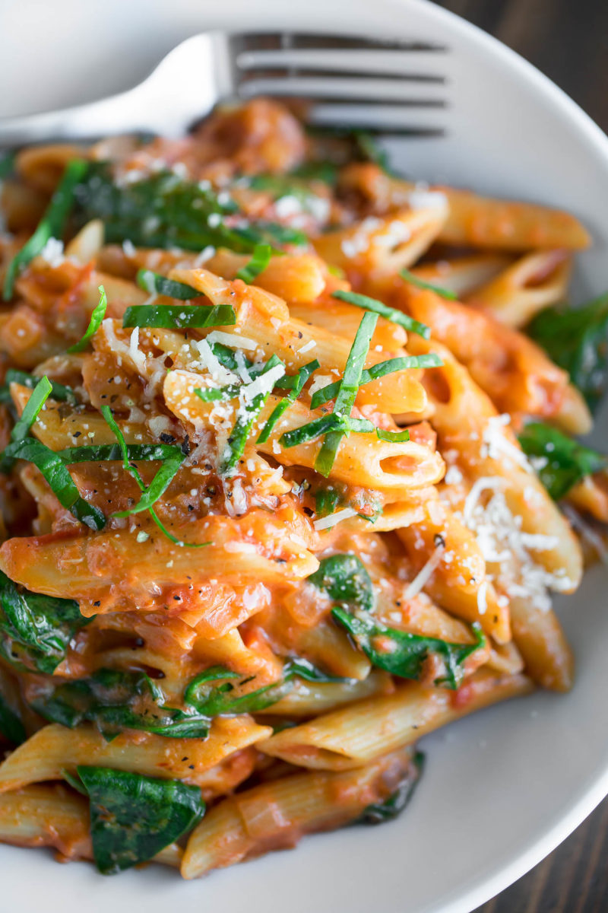

Pot Penne Pasta

Description
I make this easy peasy Instant Pot penne pasta with jar sauce to keep things crazy simple but you could also use your favorite go-to homemade sauce if you’d like.
For the carnivores out there, you can also brown some ground beef in the IP first (sauté it along with the onions) before adding the remaining ingredients.
Paul asked me if I could add mushrooms to it next time and I am SO excited to try it! I think it would be an awesome addition.
Instant Pot Pasta
This simple and saucy pasta dish is a fantastic weeknight dinner and is ready in record time!
Cooking the whole pasta dish in the Instant Pot nixes the need for additional pots/pans and draining/straining. You can 100% whip this up on the stove if needed but I love the ease of the pressure cooker here.
Ingredients
- 2 tsp olive oil
- 1 small yellow onion
- 2 cloves garlic
- 2 cups water
- ¼ tsp salt (plus extra to taste)
- ¼ tsp crushed red pepper flakes
- ¼ tsp dried basil or fresh basil, to taste
- 1/8-1/4 tsp black pepper
- 12 oz penne pasta
- 2 cups spaghetti sauce (snag your favorite!)
- 1 TBSP cream cheese
- 2 handfuls fresh baby spinach
- Parmesan cheese for topping, to taste
Steps
- First measure our all your ingredients and prep your veggies. This dish comes together quickly!
- Peel and finely chop your onion. Peel, smash, and mince garlic.
- Using a 6-Quart Instant Pot, set to sauté function, add 2 tsp oil, and heat. Sauté onions approx. 3-4 minutes or until desired tenderness is reached, then add garlic and cook an additional 30 seconds until fragrant.
- Press "CANCEL/OFF" and add water and pasta. Stir to combine, making sure the onions/garlic are incorporated into the liquid and not stuck to the bottom.
- Add crushed red pepper flakes, basil, salt, and pepper and top with 2 cups of spaghetti sauce but DO NOT STIR.
- Secure the lid and place the vent in the sealing position. Set to "MANUAL" or "PRESSURE COOK" mode on "HIGH" pressure. Use the +/- button to adjust the cook time to 5 minutes. The general rule of thumb for cooking pasta in the Instant Pot is to cook for half the box's cook time for the noodles. Double check your pasta box and adjust time as needed.
- The Instant Pot will take an adittional 5-8 minutes or so to come to presure before the countdown begins. When the Instant Pot beeps and the countdown has finished, quick release the pressure by flipping the valve to venting position. Stand back as the steam releases.
- Once the pin drops and the lid unlocks, remove lid and mix in the cream cheese and spinach. Return the lid for a minute while the spinach wilts. Snag a noodle to taste-test then adjust spices as needed, adding extra of anything you'd like. I added extra red pepper flakes to mine – yum!
- Top with grated Parmesan cheese and dig in while it's hot!